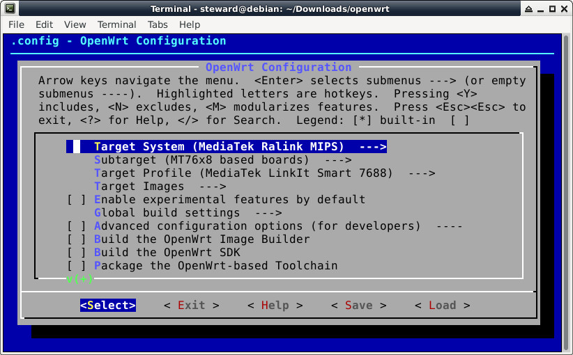

$ cd $ sudo apt-get install git g++ libncurses5-dev subversion libssl-dev gawk libxml-parser-perl unzip $ git clone https://github.com/openwrt/openwrt $ cd openwrt $ cp feeds.conf.default feeds.conf $ echo src-git linkit https://github.com/MediaTek-Labs/linkit-smart-7688-feed.git >> feeds.conf $ ./scripts/feeds update $ ./scripts/feeds install -a $ make menuconfig

$ make V=99
燒錄(使用USB供電)：
1. 格式化USBDisk成FAT32
2. 複製bin/ramips/openwrt-ramips-mt7688-LinkIt7688-squashfs-sysupgrade.bin到USBDisk(lks7688.img)
3. 插入USBDisk到MT7688 USB host port
4. 按住WiFi按鈕
5. 5秒後鬆開WiFi按鈕(第一次WiFi LED滅時)